| C_Date | Location | Water Temp. (degC) | Latitude | Longitude |
|---|---|---|---|---|
| 1998-06-29 | PK | 29.9 | 30.29946 | -87.41041 |
| 1998-06-24 | PK | 30.5 | 30.30090 | -87.40399 |
| 1998-07-07 | PK | 30.8 | 30.30253 | -87.39704 |
| 1998-07-17 | PK | 29.9 | 30.30348 | -87.39326 |
| 1998-06-17 | PK | 29.0 | 30.30486 | -87.38802 |
A Time Series Analysis on Nesting Habits of Loggerhead Turtles
1 Introduction
1.1 Problem Definition
The goal of this project is to use Time Series Analysis to evaluate the seasonality of Loggerhead Turtle nesting habits, specifically, how predictable are the seasonal dates as to when turtle nesting season begins and ends as well as evaluating the influence of other environmental factors like water temperature.
Time Series Analysis can be used for this experiment because of its associated ‘time stamp’ - a previous value can be compared with a present value and, is in turn, used to predict a future value for a particular time period, or forecasting based on comparable past data.
1.2 Significance and Motivation
The data came from Dr. Schmutz of the Department of Environmental Science and then provided to Dr. Seals of the Department of Mathematics and Statistics (both of the University of West Florida) as a collaborative effort to statistically study the nesting habits of Loggerhead Turtles along the Gulf Coast of Florida.
Our interdisciplinary team presented this study so that I could be part of a research team and gain the valuable knowledge and skills that are required in a realistic work environment; the types of questions to ask the “customer” (Schmutz) vs. the questions to ask the “supervisor” (Seals). Also, the collaborative nature of this project creates and strengthens departmental partnerships within the university for future research opportunities.
The results generated by this study will help local environmentalists with their conservation activities to aid the safe and successful nesting of Loggerhead Turtles in our area.
1.3 Loggerhead “Turtle Tangent” [Florida Fish and Wildlife Conservation Commision]
- Threatened Species (at the State and Federal Level)
- reach sexual maturity at 35 years old
- females return to their nesting site every 2 (or more) years
- average of 4 nests created each season per female turtle with one being created about every 14 days
- Florida is host to about 100,000 nests each year (Brevard and Palm Beach counties account for about 50,000)
1.4 Context and Background
A Time Series Analysis was suggested to be the best approach when looking at the research Problem Definition, particularly the seasonal aspect of the beginning and end of the annual nesting period. The methodology of the Time Series Analysis is broken down into steps that can be iterative in nature depending on the results from each step. These steps include exploring the data and possible relationships; examining the stationarity of data; determining which decomposition method will be used (additive or multiplicative); selecting a model to “capture underlying data patterns based on characteristics such as seasonality, trend, and stationarity” (MathWorks 2026); the training and validation of the model; assessing the resulting metrics, forecast outcomes and consequential residuals. Since this is a study on Biological Data, it is will likely result in a strong seasonal model; therefore, non-linear models will suit the data more consistently, for example, ARIMA model with a suitable “fit” enhancement.
1.5 Objectives and Goals
TBD
1.6 Summary of Approach
Acquire and Clean Data
Exploratory Data Analysis and Visualizations
- Investigating variable relationships
Stationarity of Data
- Testing for Constant Mean, Variance, Autocorrelation
- Time Series Plot - Visual Verification
- ADF - Augmented Dickey-Fuller Test (Unit Root Test) - Statistical Verification
Decomposition Determination
- Additive or Multiplicative
- Interpreting Season/Trend/Residuals (STL - Seasonal-Trend decomposition using Loess)
- Strength of Trend and Seasonality
Model Selection
- PACF & ACF - Partial and Autocorrelation Function (Plot) - Visual Verification
- Determining p, q, d, P, Q, D
- Define the model e.g., ARMA, ARIMA, SARIMA, etc
Training and Validation
- Box-Cox Transformation, LOESS Smoothing, Fourier Transform, Neighbor Test, Exponential Smoothing, GAMs options
- Holt-Winters model (RMSE) for metric comparison
Metrics
- RMSE
- ARIMA
Forecasting and Residual Analysis
2 Methods
2.1 Data Aquisition and Sources
Data was collected from 1998 to 2020 and prime nesting season was defined from May through the end of September. When a nest was discovered, it immediately populated a date and the unique longitude and latitude of the nesting spot within the dataset; other variables included were the beach that the nest was spotted and the species of turtle that made the nest. Water temperature was added from a buoy that had a complete set of data and within the immediate area of the Gulf beaches. The temperature data was added to investigate if it has any relationship when the nesting season begins or ends.
The original dataset contains initials of the locations and species - see below their full meanings:
- “PB” - “Pensacola Beach”
- “SR” - “Santa Rosa Beach”
- “PK” - “Perdido Key”
- “FP” - “Fort Pickens”
- “CC” - “Caretta caretta”, Loggerhead Turtle
- “CM” - “Chelonia mydas”, Green Turtle
- “DC” - “Dermochelys coriacea”, Leatherback Turtle
- “LK” - “Lepidochelys kempii”, Kemp’s Riley Turtle
Although 4 turtle species were identified in the study, our primary focus was on Loggerhead Turtles, Carrera carrera, see Figure 6 for individual season plots.
2.1.1 Additional Data
Our team was influenced by the initial literary review (Mazaris 2004) where temperature data also collected and Dr. Schmutz found that there are many buoys in the region of study along the Gulf Coast. He picked two buoys (42012 and 42028) and I was tasked to look at their data and pair temperature data with the dates of new nest discovery. Unfortunately, the data sets were incomplete in that the temperature data did not go back 22 years for either buoy. I was able to look further and found Station 42039 further out into the Gulf. Station 42028 was dropped from the set of stations since there was too little data; the other three stations were compared with each other to make sure we could use Station 42039.
2.1.2 Buoy Coordinates and Data Sample Sizes
Station 42012 - Orange Beach, AL - 30.060 N 87.548 W (30°3’36” N 87°32’54” W) -> 2009-2020
Station 42028 - South Destin - 29.745 N 86.227 W (29°44’42” N 86°13’37” W) -> January, 2026
Station PCLF1 - Pensacola, FL (near NAS) - 30.404 N 87.211 W (30°24’14” N 87°12’40” W) -> 2005-2020
Station 42039 - Pensacola South - 28.787 N 86.007 W (28°47’12” N 86°0’24” W) -> 1998-2020
2.1.3 ANOVA Comparison of Temperature Data
Station 42012, PCLF1, and 42039 were compared and the results proved that we would be able to use Station 42039. The p-value was less than 0.01 (0.00635) which makes the result extremely significant (see Table 2). The average differences between the following station temperatures were found to be 0.01 to 0.227 deg Celsius as shown below:
|42012 vs PCLF1| = 0.013 degrees Celsius
|42039 vs PCLF1| = 0.214 degrees Celsius
|42039 vs 42012| = 0.227 degrees Celsius
These result cemented the conclusion that Station 42039 could be used even though it was located further away from the Gulf coastline where the turtles nest (see Figure 1 and Figure 2) and a snippet of the final dataset is shown in Table 1.
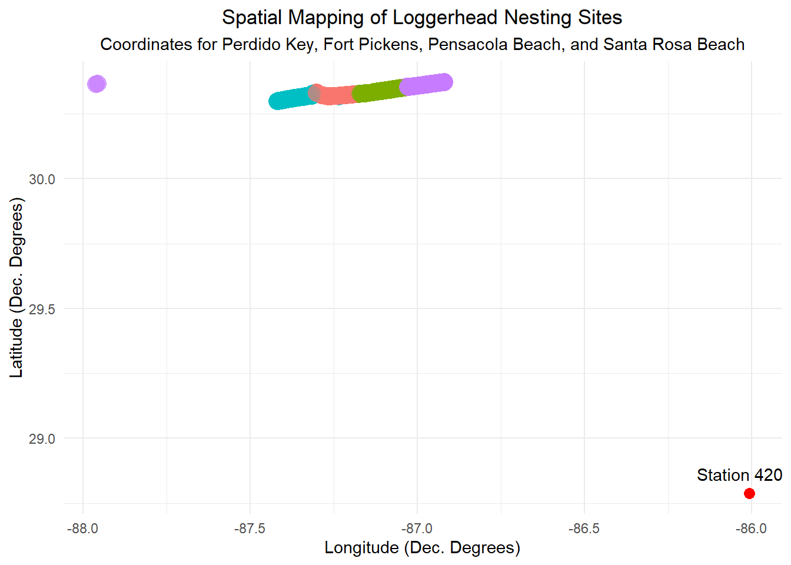
2.2 Mathematical and Statistical Modelling
Overall, Time Series Analysis is a layered methodology where each layer can strengthen the fit and forecast of the overall model. The main steps of the analysis include:
- Exploratory Data Analysis and Visualizations
- Stationarity of Data
- Decomposition Determination
- Model Selection
- Training and Validation
- Metrics
- Forecasting and Residual Analysis
2.2.1 Exploratory Data Analysis and Visualizations
The first series of analysis involves
- making sure the that the points are in time order and occurs at a consistent frequency
- looking for patterns in the data and how the data changes over time
- interpreting whether it contains a Trend or any Seasonality.
At this point, we also need to identify outliers and if they are significant for the overall analysis or whether they should be trimmed. It is also important to find any data that could be interpreted as “not applicable” which would also skew the analysis with erroneous results, for example, some data points may have “n/a”, “na”, or a blank/missing value while others may put a number or letter sequence that would not match with the rest of the data.
These errors in the data may not be discovered until plotting results. Checking for linear relationships between two columns at a time may reveal mistakes in the data set or erroneous values. I was able to determine that several pairs of longitude and latitude points were incorrectly recorded based on a simple spatial mapping plot of longitude vs latitude. Since this is a collaborative effort with Dr. Schmutz (Professor of Earth and Environmental Science, UWF), he was notified so that he could make the decision to omit the data or correct it; negative signs were missing from the longitude data and he decided to correct them. We found that all erroneous temperature readings recorded from the buoy were the number ‘999’ and so this had to be filtered out too because the data would definitely be skewed.
2.2.2 Stationarity of Data
3 rules for strict stationarity…
Constant Mean - an upward or downward trend denotes that the series is not stationary.
Constant Variance - the volatility of the spread of the data should stay consistent over the series. Increased deviations (fluctuations) from the average as the series progresses shows non-stationarity.
Constant Autocorrelation - looking at time t and t-1 and the how they differ; the difference of the internal structure/statistical properties of the data should be constant and not significantly change over time.
The Augmented Dickey-Fuller (ADF) Test shows whether the data is Stationary based on a resulting p-value. A Time Series Plot will confirm the p-value of the ADF.
2.2.3 Decomposition Determination
Classical Decomposition Methods comprise of the Additive method and the Multiplicative method.
For additive decomposition, the magnitude of the seasonal fluctuations (or variation about the trend) are not expected to vary with the level of the time series as the data grows, or shrinks, over time. Essentially, we are assuming that there will be a constant absolute magnitude about which there will be seasonal fluctuations.
An additive model’s graphical representation will show that there will be parallel peaks and troughs with a consistently even width between them, respectively, even though the overall graph may be showing a positive or negative correlation.
The components (S,T,R) are proven to be independent by performing an additive decomposition and checking to see how R performs - if R (remainder/noise) remains fairly consistent, then an additive decomposition is needed; however, if R oscillates and increases in magnitude (and continues to do so) then the multiplicative decomposition has to be used.
y_t = S_t + T_t + R_t where S=Seasonal, T=Trend, R=Residuals/Noise at time t
The multiplicative decomposition is used when the the magnitude of the seasonal fluctuations are proportional to the level of the time series. Essentially, there is a percentage change between the start and the end of each season and, as aforementioned, the residuals are checked for continually increasing oscillations.
y_t = S_t \times T_t \times R_t The STL method in R used - Seasonal-Trend decomposition using Loess (Locally Estimated Scatterplot Smoothing) to show the breakdown of S, T and R.
The Trend Strength, F_t, is the comparison of Remainder (R_t) versus the variance of the Data-without-Trend (T_t + R_t) and how much data volatility there is in the long term. F_m = max(0,1-[Var(R_t)/Var(m_t + R_t)]) The Seasonal Strength, F_s, is the comparison of Remainder (Y_t) versus the reduction in variance of the Seasonally-Adjusted data (S_t + R_t) after the Trend has been removed. F_s = max(0,1-[Var(R_t)/Var(s_t + R_t)])
2.2.4 Model Selection
SARIMAX (Seasonal Autoregressive Integrated Moving Average with an Exogenous Variable) is a comprehensive time series analysis that is a combination of seasonality, autoregression, differencing, moving average and is also a forecasting method that is well suited to a biological analysis. It is an extension of the ARIMA framework that incorporates the annual seasonality of biological data and the exogenous variable of water temperature. Also, like ARIMA, SARIMAX analysis data has to be proven stationary by testing its mean and variance to ensure that future predictions are based solidly on historical pattern recognition.
The S (Seasonal) Component represents the regular intervals at which a relationship can be identified and is to be expected using biological data, i.e., finding the natural rythmn of nature.
The AR (Autoregressive) Component, p, involves the model using the relationship of the variable with its own previous values (or lagged observations).
The I (Integrated) Component, d, helps to stabilize the mean and remove trends from the time series analysis and makes it stationary by differencing (d).
The MA (Moving Average) Component, q, represents the effect of previous error terms on the present value of the time series.
The X (eXogenous) Component is an external variable that can help fill in the gaps of past behaviour of the data to soften fluctuations and strengthen future predictions. For this analysis, our exogenous variable is the Gulf of Mexico Surface Water Temperature.
The SARIMAX model is mathematically represented using a Backshift (B) notation where By_t=y_{t-1}:
\Phi_P(B^s)\phi_p(B)\nabla^d\nabla_s^Dy_t=\beta x_t+\Theta_Q (B^s)\theta_q(B)\epsilon_t
- y_t: Dependent Variable, total nesting count
- x_t: Exogenous Variable, surface water temperature
- \beta: Coefficient, quantifies impact of water temperature on nesting activity
- \nabla^d and \nabla_s^D: Differencing Operators
- \phi_p and \Phi_P: AR(p) and SAR(P) Components
- \theta_q and \Theta_Q: MA(q) and SMA(Q) Components
- \epsilon_t: White Noise (error term)
Box-Jenkins time series method has three steps that the time series analysis can be run through iteratively.
Step 1: Identification determines the order of the Seasonal and non-seasonal AR, I and MA components that are appropriate for the time series and where the eXogenous variable is incorporated. Within this step, there is a Stationarity Check for stability using the mean and variance of the model and this includes determining the Seasonal Stationarity. If there are significant fluntuations in the Mean (from analyzing the peaks and troughs), Seasonal Differencing(D) is needed as well as Standard Differencing (d). Next, the Autocorrelation and Partial Autocorrelation Analysis (ACF and PACF) plots are generated to identify model lags or Seasonal Spikes (most probably a multiple of 12). The spikes will be used to identify the Seasonal Autoregressive (P) and Seasonal Moving Average (Q). The Seasonality Check of the data is to confirm that there is a repeating 12-month pattern, or biological cycle where s=12, thus, validating the “S” component in SARIMAX. The relationship between the Exogenous Variable (X) and the time series nedds to be identified appropriately such that it is statistically relavent and aligned (may have to impose a lag) to the overall model and can help explain the model’s behaviour.
Step 2: Estimation is where the a model is selected based on the identified seasonal and non-seasonal parameters (p, d, q) x (P,D,Q)_s. The AR and MA lags are also selected based on the ACF and PACF found in the previous identification step. The non-seasonal AR (\phi) and MA coefficients (\theta) will be designated as well as the seasonal AR (\Phi) and MA (\Theta) coefficients, if they exist. Lastly, for this step, the SARIMAX model’s exogenous variable coefficient (\beta) can be estimated. All of thee parameters will be applied and the model generates the fitted values to synthesize its unique historical behavior and predictive nature while amalgamating its historic patterns with the exogenous temperature data. The Akaike Information Criterion (AIC) will be used to make a parsimonious model to ensure accuracy using as few parameters as possible - too many parameters can diminish the model’s optimization.
Step 3: Diagnostic Checking involves investigating the residuals (the difference between the predicted SARIMAX values and observed data) to ensure no additional patterns are left in the error/residual terms; the residuals should resemble “white noise” randomness. Next, the Ljung-Box Test is utilized to check to see if the residuals are as desired, i.e., random, followed by a mean and variance check; the desired outcome is that the residuals have a mean close to zero and a variance that is constant (homoskedasticity) cofirming that the residuals do not grow or shrink over time. Also, the residuals are compared to the water temperature data to make sure that they do not correlate; if this is the case, its coefficient will have to be re-estimated. Finally, the term Iterative Refinement is used to describe the process for going back through the steps so far if the previous checks raised any issues.
An ACF Plot will be generated to show the relationships within the data with respect to Seasonality and Non-stationary Trends. We will also be observing the prominence and regularity of the plot’s spikes, if the mean is shifting over time by analyzing the correlation between data and lags, and whether Differencing is required to achieve stationarity.
A PACF Plot will be generated to determine the order of the standard AR (p) and the seasonal AR (P) via a “cut-off” point. A lag number will automatically be assigned for the SARIMAX model and the cut-off point should match this. This number is predicted to be 12 since we are looking at biological data. Therefore, we will be paying attention to whether the cut-off at the beginning of the plot is 12 which can lead to P being initially assigned a 1.
The automatic base model for ARIMA that is used during programming is of the format: ARIMA(p,d,q)(P,D,Q)_{Lag} but is written within the report as: SARIMAX(p,d,q)(P,D,Q)_{Lag}
2.2.5 Training and Validation
Based on my research, SARIMAX, Fourier series, and Prophet all handle non-linear, highly seasonal data well. “Neigbouring” of the SARIMAX model will be used to make sure that a slight adjustment will not provide a better model.
SARIMAX uses lags to its advantage and assumes high correlation with the previous 12-month instance to its current observation. It utilizes the Seasonal Moving Average or Seasonal Autoregressive terms by “remembering” historical biological patterns and distinguishing between a surge or an anomaly by taking full advantage of the environmental influence, i.e., the exogenous variable, of water temperature.
Fourier Series is used in combination with ARIMA to create a Dynamic Harmonic Regression model. The Dynamic attribute uses ARMA to handle errors or “memory” in the data. The harmonic attribute explains how it is an approximation model that breaks down the data into the sum of sine and cosine functions to handle the seasonality component to aid in mapping a predictable cycle. The Regression attribute refers to the exogenous data and handles piece-wise shifts in nesting activities. The Fourier Series allows for a relaxed approach to defining biological seasonal cycles and is an excellent choice for biological data.
“Prophet” was designed by the Data Science Team at Meta to handle fluctuations of business and biological data within time series analysis. Prophet decomposes the time series model using a Generalized Additive Model, or GAM, y(t) by Trend, g(t), Seasonality, s(t), Holidays/Events (e.g, Environmental Disasters), h(t), and an Error term, \epsilon_t - $ y(t)=g(t)+s(t)+h(t)+_t $ - it then looks at the series and adjusts curves to show the relationship rather than analyzing the actual relationship between the data points. Prophet is known to handle missing data, more resilient to outliers, and extra exogenous variables can be added. It also incorporates the Fourier Series for the Seasonal aspect to generate a smoothed seasonal cycle.
“Neighboring”, or Stepwise Evaluation of Neighboring Parameters, can be used as a comparison to validate the correctness of the chosen model, e.g., changing p=0 (no immediate memory) to p=1 (1 month memory). Depending on what the SARIMAX model is, I will research what its “neighbor” should be and then test to make sure it is not better than the chosen model. There is also a balance to maintain between the simplicity and the accuracy of the model - one must use the fewest number of parameters to maintain the accuracy (parsimony).
Note: Exponential Smoothing was considered but upon further research, it was not a good candidate because it can not handle the exogenous data well although it can generally handle outliers better than SARIMAX.
2.2.6 Metrics
- AIC (Akaike Information Criterion) score: used to find the most parsimonious (efficient and simple) model from all of these methods; the lowest AIC score is usually the best but have to check the parameter count.
- “ma” coefficients: Moving Average coefficients are used to correct predictions from the previous point of the forecast, more likely to be a monthly forecast.
- “sma” coefficient: Seasonal Moving Average coefficients handles correcting predictions from the previous point of the forecast, more likely to be a yearly forecast.
- s.e. - Standard Error measures the reliability of ALL of the coefficients generated. As a rule, if the coefficient being compared is roughly double that of the standard error, the coefficient is deemed statistically significant corresponding to a p-value of 0.05.
- sigma2 - \sigma^2 is the variance of the residuals, or remaining noise, in the model that can not be explained. A lower \sigma^2 suggests a better, tighter fit.
- RMSE - Root Mean Squared Error is a measure of trust in the model’s predictions. It averages the distance between the model’s predictions against the original observed data. The RMSE will be in the same units as the data which, in our case, is number of nests.
2.2.7 Forecasting and Residual Analysis
- Train and Test - we will use the first 21 years (1988-1999) of the data to develop the training model and the last year year of data will be used as the test set for each model’s forecasting capabilities. This is called the “Out-of-Sample Validation”.
- Forecasting - this is a probabilistic estimate of what the future of the model will look like based on the patterns learned during training. Point Forecasts that offer its best estimate as to where future data points will reside in future months. Prediction Intervals consist of 80% and 95% uncertainty ranges that show the variability in nesting counts based on past learning of fluctuations or “environmental shocks”.
- Residual Analysis - after forecasting, the residuals behaviour will be compared to “White Noise” and will be verified using a Ljung-Box Test and a Residual Histogram to check for model bias and that the residuals are at a minimum.
2.3 Software and Tools
- R Programming Environment - widely used for time series analysis.
- fpp3 “Forecasting:Principles and Practice” meta-package.
- tsibble - creation and management of data frames.
- feasts - “Feature Extraction and Statistics for Time Series”, used for calculating the Ljung-Box p-value.
- fable - primary modeling entity for defining, estimating, and forecasting SARIMAX and Fourier ARIMA models.
- fable.prophet - to incorporate the Generalized Additive Model (GAM)
- STL method - Seasonal-Trend decomposition using Loess (Locally Estimated Scatterplot Smoothing).
2.4 Ethical Considerations
Data integrity and Transparency
Conservation Policies
Sensitive Information/Species Protection
3 Results
The analysis addresses the extent at which the nesting trends are changing with respect to:
- time
- water temperature (possible sex imbalance inference)
3.1 Core Findings
3.1.1 Exploratory Data Analysis and Visualizations
2017 had the highest number of nesting sites (see Figure 3)
Perdido Key had the most nesting sites (see Figure 4)
July was the aggregated top month for nesting sites (see Figure 5)
The seasonality of the data can be observed in Table 3
ANOVA results using Tukey Honest Significant Difference (HSD) or Comparison of the Means (95% confidence level) (see Table 2)
3.1.2 Stationarity of Data
Null Hypothesis, H_0: The data is non-stationary and contains a unit root, p < 0.05
Alt. Hypothesis, H_1: The data is stationary and does not contain a unit root, p > 0.05
The Augmented Dickey-Fuller Test reveals that p = 0.0868.
Conclusion: We Fail to Reject the Null Hypothesis; the data is non-stationary.
3.1.3 Decomposition Determination
- This is an example of Multiplicative Decomposition because the Residuals, or Remainder, (Y) are not constant over time and are larger as the number of nests increase showing that the seasonal variance is proportional to the trend. The Seasonal component shows a very regular pattern. The Trend is showing a slight upward relationship and could infer that conditions are becoming more favorable for nesting turtles. The trend has successfully captured the the full growth pattern of the data (including the notably large nesting month in 2017) and has ignored the month-to-month bumps. However, because the trend has a large bump, and not a completely horizontal line, shows the need for Differencing in the SARIMAX Model (see Figure 9).
- The moderately high Trend Strength (0.5499, close to 0.6 minimum) aligns with having to use Differencing in the SARIMAX model. It also shows that there is a conservative long-term growth in turtle nests.
- The Strong Seasonal Strength (0.8087) shows that there is a highly predictable season and can be seen directly in Table 3.
- There is Differencing Loss in the model. The use of the Seasonal Differencing (D=1) makes the model disregard the first 12 months of data since it has no previous time to compare with.
3.1.4 Model Selection
- The ACF Plot shows that there is Seasonality in the data showing yearly peaks. There is a definite trend since the bars stay high and decrease slowly over all lags. This also shows that the mean is shifting over time and Differencing is required for SARIMAX modelling (see Figure 10).
- The PACF determines the order of AR via a “cutoff” point. The cutoff point in the PACF plot is at the 12 month mark after which the spikes are in the “insignificant zone” and is akin to “white noise”. This shows there is no direct correlation with the data’s own past values at the same time of the year; therefore, p = 0 (see Figure 11).
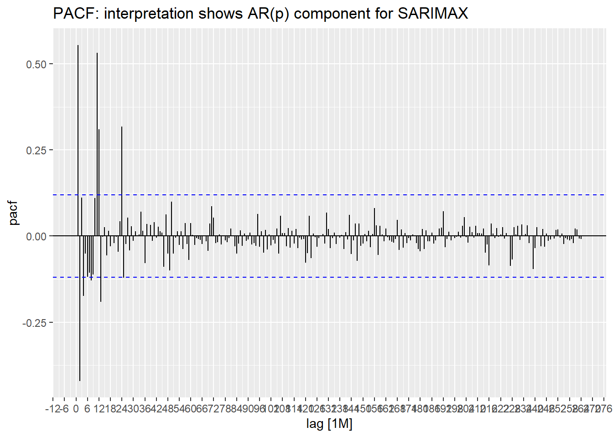
- The resultant model is actually a SARIMAX model - Seasonal ARIMA with an eXogenous variable.
(1-B^{12})y_t=(1+\theta_1 B+ \theta_2 B^2)(1+\Theta_1 B^{12})\epsilon_t =(1+0.60B+ 0.14B^2)(1-0.70B^{12})\epsilon_t - ma1 = 0.60 (s.e. = 0.062, significant since t ~ ma1 > 2*se)
- ma2 = 0.14 (s.e. = 0.061, significant since ma2 > 2*se)
- sma1 = -0.70 (s.e. = 0.055, significant since sma1 >> 2*se )

The ARMA, or Autoregression (AR) and Moving Average (MA), base accounts for zero AR terms and a two month MA. The AR is zero because of the strong seasonality of the model (PQ has more influence). Also, the exogenous surface water temperature shows that it holds the momentum of the monthly nesting activity.
The S in SARIMA adds Seasonality to the ARIMA model; PQ defines the Seasonality of the model capturing the nesting cycle.
The X in SARIMAX adds the exogenous (external) variable of Surface Water Temperature.
The final SARIMAX equation is as follows:
SARIMAX(p,d,q)(P,D,Q)_{AnnualLag} = SARIMAX(0,0,2)(0,1,1)_{12}
Note: Model was able to distinguish the change in nests numbers from month-to-month by correctly assigning a 12 month lag.
Difference: d = 0, due to less relevant Trend Strength. The Differencing at a level 1 (d=1) for the dataset found in Stationarity of data section BUT dropped from the model because the Seasonal Differencing came from a much stronger value that proved to stabilize the mean. Over-differencing, i.e. having an unnecessary second level of differencing, can make a model less accurate.
Seasonal Difference: D = 1, due to strong Seasonal Strength.
Autoaggressive: p = 0, the number of nests found in one month does not have a ripple effect from the previous month possibly because turtles nest every two years (on average) and may not be the same set of turtles returning annually.
Seasonal Autoaggressive: P = 0, the number of nests found in one season does not have a ripple effect from the previous season possibly because turtles nest every two years (on average) and may not be the same set of turtles returning annually.
Moving Average: q = 2, the model has memory from the previous 2 months to adjust for the current month.
Seasonal Moving Average: Q = 1, the model is able to adjust for inconsistencies in nest counts from last year to the current year’s prediction. Inconsistencies can arise from weather deviations and other environmental disasters like the Gulf oil spill of Summer, 2010.
Checking Residuals(see ?@fig-arima-fit-auto): shows the graphical representation of the residuals. The following analysis proves that the Auto-generated ARIMA can be considered an accurate representation of the model.
- The Innovation Residuals show that the minor “shock” fluctuations mostly remain around a zero-mean like ideal “White Noise”. The unexpected negative influence (significant innovation or “shock”) at the end of the system shows that the model was not expecting the lower nesting numbers. The equation below explains how the “shocks” that occur in the system are represented to account for unpredictable fluctuations after seasonal and trend instances have been accounted for.
\epsilon_t = y_t - E[y_t|PastInformation]
Using the Ljung-Box Test (ACF Analysis), the lack of lag “protrusions” outside of the boundaries of the ACF of Residuals shows that the model contains most of the information from the data and what is left consists mostly of random noise. The model can be viewed as a success given that the spikes at 12 and 24 are within the “insignificant” zone. Also, the ACF plot confirms that the residuals are made up of white noise and are considered uncorrelated.
The Residual Histogram (count vs residuals) shows that the residuals are centered about zero and follows a fairly normal (bell-shaped) distribution suggesting that the model is unbiased.
In conclusion, the three plots encapsulate the idea that all available patterns have been captured. The residuals have shown to be uncorrelated and normally distributed allowing the confidence levels to expand over time at a realistic rate during extended forecasting (see (arima-fit-auto?)).
3.1.5 Training and Validation
The base_sarimax and pdq_sarimax (has p-d-q-P-D-Q values hard-coded into its model) achieved the best overall performance with an Akaike Information Criterion (AIC) of 1544.76 for all data from 1988 to 2019 (see Figure 12 and ?@fig-AIC-100). The data for 2020 is set aside to be used to evaluate the model’s performance on new unseen data. The negatively-influenced nesting season of 2020 will test the robustness of the model’s ability to forecast effectively and accurately.
I ran both base_sarimax and pdq_sarimax to check that they had the same AIC result, then remove pdq_sarimax to simplify the table.
Per the R-Studio-generated warning, “automatic selection does not select models with characteristic roots that may be numerically unstable”(Hyndman and Athanasopoulos 2026). The base_arima with Box-Cox (lambda = 0, log transform), Fourier 1, Exponential Smoothing, GAMs, and Prophet could not predict a model because a small change in data could make the model unstable. R-Studio ignores the unstable models and will choose something more reliable that will work in the long-term.
| Model | AIC | AICc | BIC | Log Likelihood | Sigma Squared |
|---|---|---|---|---|---|
| base_sarimax | 1544.76 | 1544.93 | 1558.82 | -768.38 | 28.23 |
| comp_pdq_sarimax | 1546.71 | 1546.96 | 1564.28 | -768.35 | 28.33 |
| fourier_sarimax_5 | 1596.85 | 1599.09 | 1653.82 | -782.42 | 25.32 |
3.1.6 Forecasting
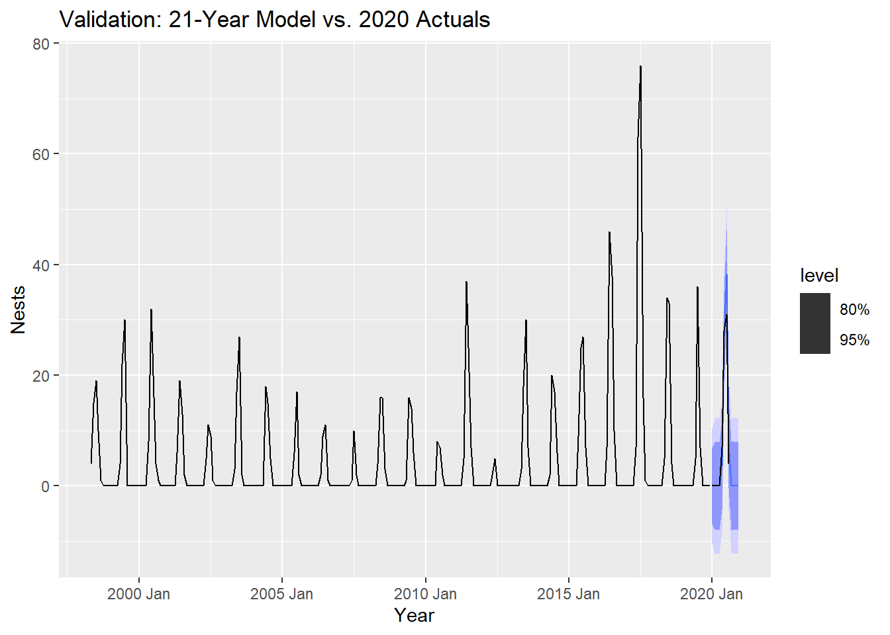
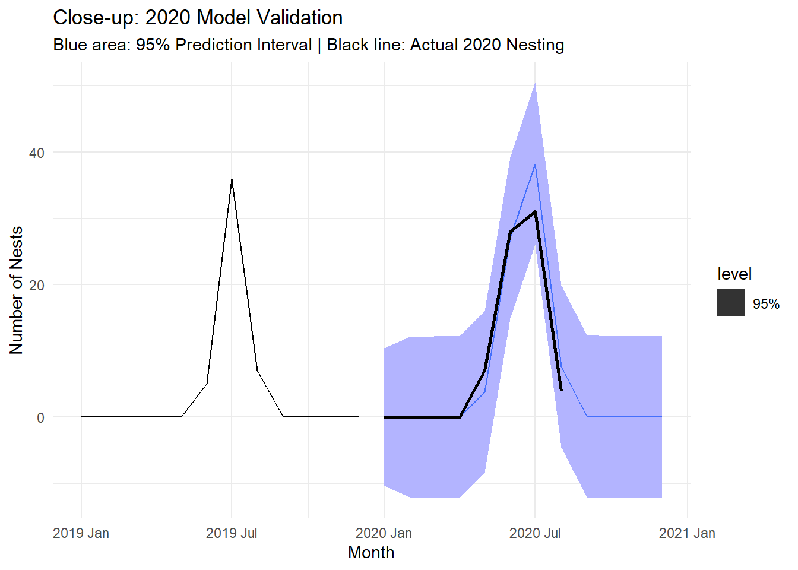
3.1.7 Metrics
# A tibble: 1 × 3
.model lb_stat lb_pvalue
<chr> <dbl> <dbl>
1 base_sarimax 16.3 0.755dof = TotalLags-(p+q+P+Q)=24-3
# A tibble: 1 × 3
.model RMSE MAE
<chr> <dbl> <dbl>
1 sarimax_train 3.11 1.893.2 Visualization and Tables
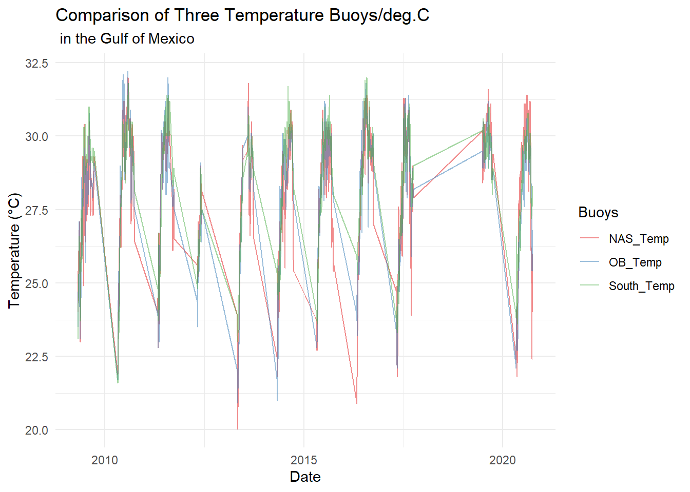
| Comparison | Difference (degC) | Lower Bound | Upper Bound | p-adj |
|---|---|---|---|---|
| OB_Temp-NAS_Temp | -0.0131 | -0.2010 | 0.1748 | 0.9854 |
| South_Temp-NAS_Temp | 0.2141 | 0.0262 | 0.4020 | 0.0207 |
| South_Temp-OB_Temp | 0.2272 | 0.0393 | 0.4151 | 0.0128 |
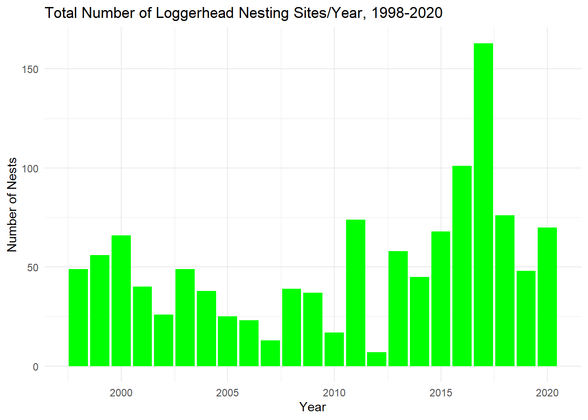
| Nesting Area | Total Nests |
|---|---|
| Perdido Key | 366 |
| Santa Rosa Beach | 301 |
| Pensacola Beach | 278 |
| Fort Pickens | 243 |
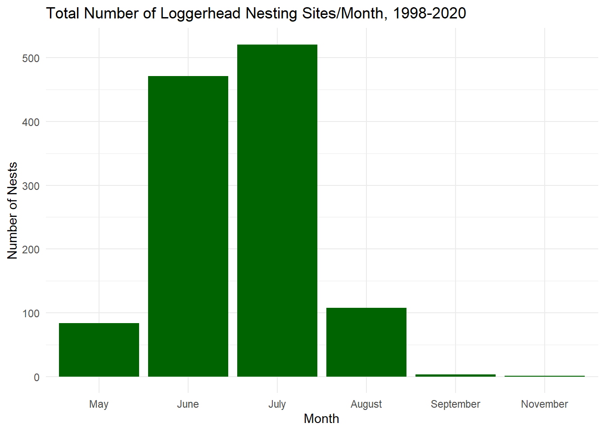
| Year | Start Date | End Date | Total Sites |
|---|---|---|---|
| 1998 | 1998-05-23 | 1998-09-06 | 49 |
| 1999 | 1999-05-24 | 1999-07-20 | 56 |
| 2000 | 2000-05-09 | 2000-09-22 | 65 |
| 2001 | 2001-05-27 | 2001-08-12 | 40 |
| 2002 | 2002-05-03 | 2002-08-12 | 26 |
| 2003 | 2003-05-21 | 2003-08-04 | 49 |
| 2004 | 2004-06-08 | 2004-08-18 | 38 |
| 2005 | 2005-06-04 | 2005-08-11 | 25 |
| 2006 | 2006-05-25 | 2006-08-07 | 23 |
| 2007 | 2007-06-27 | 2007-08-06 | 13 |
| 2008 | 2008-05-21 | 2008-08-20 | 39 |
| 2009 | 2009-05-18 | 2009-08-21 | 37 |
| 2010 | 2010-06-07 | 2010-08-05 | 17 |
| 2011 | 2011-05-19 | 2011-08-21 | 74 |
| 2012 | 2012-05-23 | 2012-06-07 | 7 |
| 2013 | 2013-05-11 | 2013-08-14 | 58 |
| 2014 | 2014-05-20 | 2014-08-30 | 45 |
| 2015 | 2015-05-13 | 2015-08-31 | 68 |
| 2016 | 2016-05-18 | 2016-08-31 | 101 |
| 2017 | 2017-05-16 | 2017-09-05 | 163 |
| 2018 | 2018-05-19 | 2018-08-11 | 76 |
| 2019 | 2019-06-28 | 2019-08-30 | 48 |
| 2020 | 2020-05-22 | 2020-08-17 | 70 |
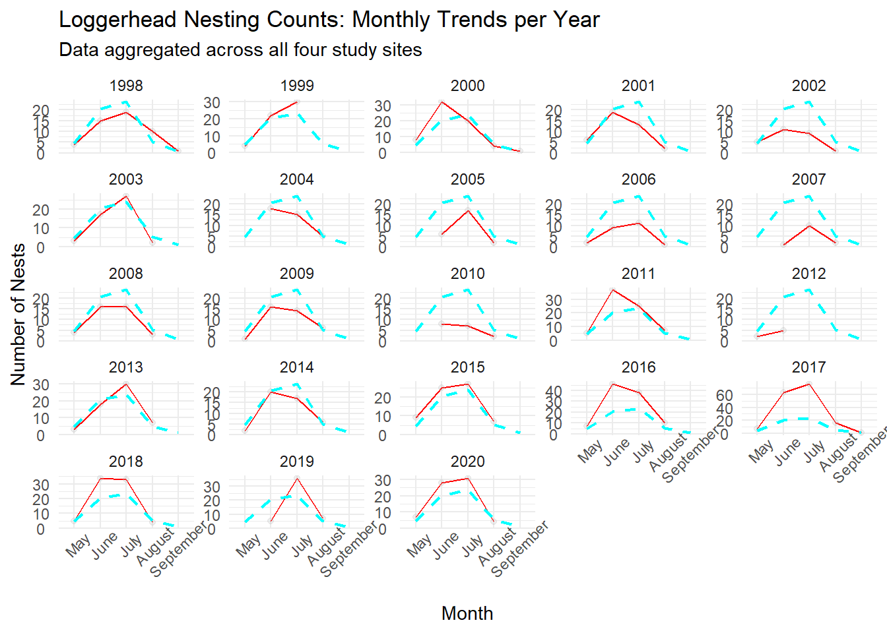
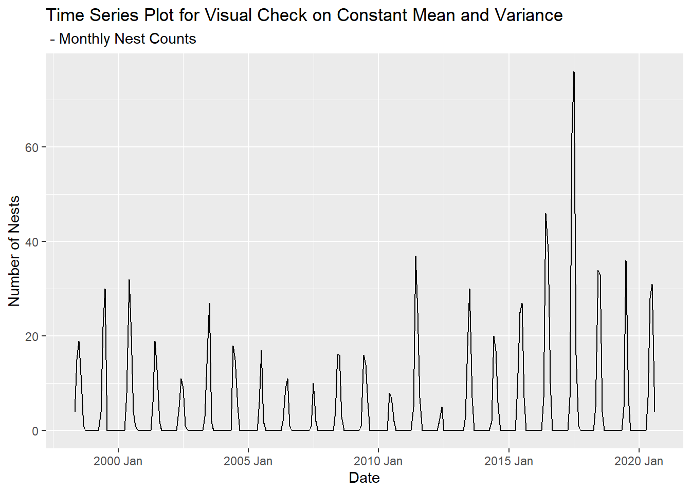
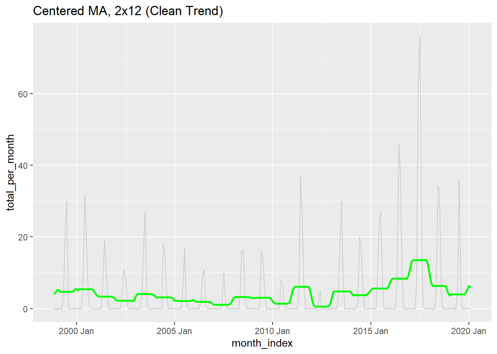
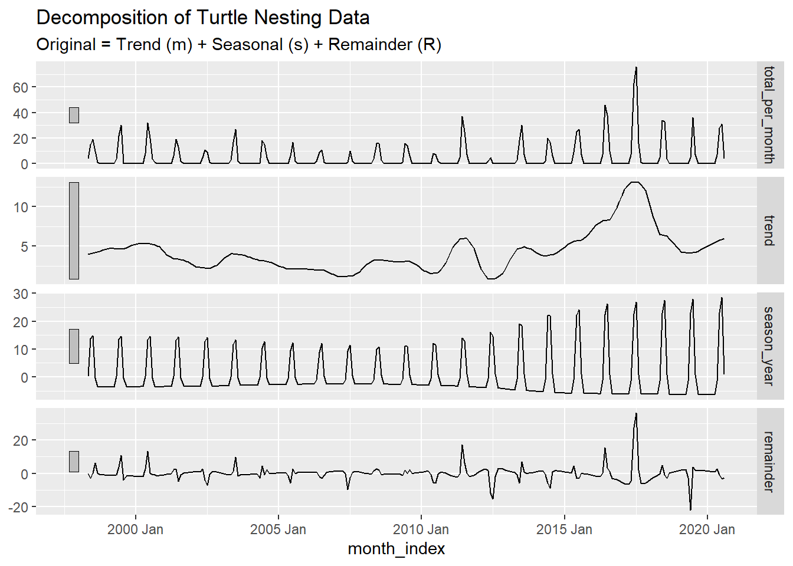
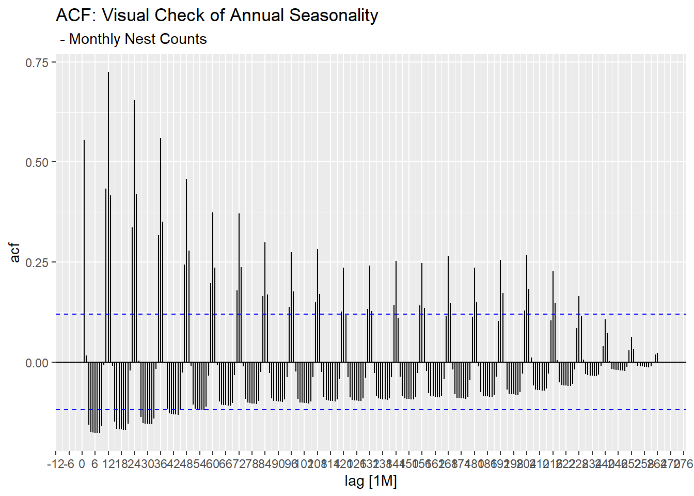

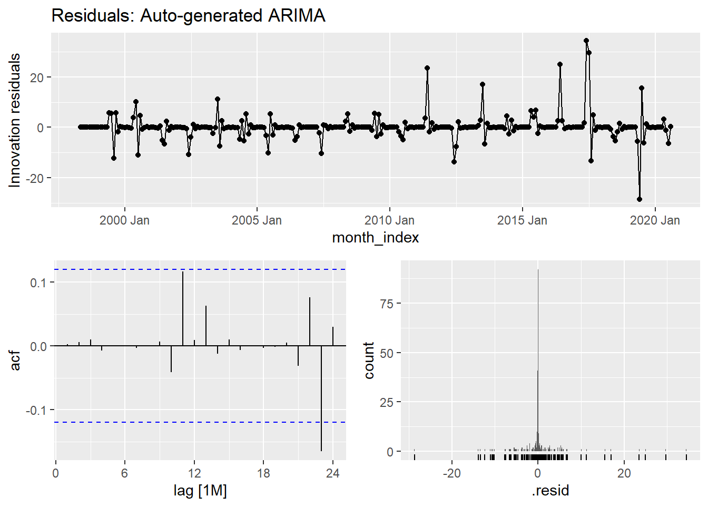
3.3 Model Performance and Comparisons
Model 1: Baseline Univariate ARIMA - looks at past nest counts - temperature included in model
Series: total_per_month
Model: ARIMA(0,0,2)(0,1,1)[12]
Coefficients:
ma1 ma2 sma1
0.6001 0.1379 -0.6977
s.e. 0.0621 0.0614 0.0547
sigma^2 estimated as 27.48: log likelihood=-790.03
AIC=1588.06 AICc=1588.22 BIC=1602.24| Model | AIC | AICc | BIC | Log Likelihood | Sigma Squared |
|---|---|---|---|---|---|
| base_sarimax | 1544.76 | 1544.93 | 1558.82 | -768.38 | 28.23 |
| comp_pdq_sarimax | 1546.71 | 1546.96 | 1564.28 | -768.35 | 28.33 |
| fourier_sarimax_5 | 1596.85 | 1599.09 | 1653.82 | -782.42 | 25.32 |
#| label: fig-AIC-100 #| fig-cap: “Tabulated AIC of added ‘fit’ Diagnostics: 22 years of data” kable_AIC_100
Model 2: ARIMAX - Dynamic Regression model - forecasting by responding to temperature
Nesting counts are DEPENDENT VARIABLE Water Temperature is EXOGENOUS REGRESSOR (xreg)
y_t=\beta(Temperature_t) +\eta_t where \eta_t is an ARIMA process part 1 - predict number of nests using temperature data part 2 - use ARIMA to take care of the rest?
3.4 Uncertainty and Variability
TBD
4 Discussion
4.1 Interpretation
Notice the sharp downward spike in the remainder at the very end (late 2019/2020). This suggests that the actual nesting was much lower than the model expected for that time of year. This is a great point for your Discussion section—you can investigate if there was a late-season storm or a temperature drop that caused this deviation.
4.2 Limitations and Challenges
No new data after 2020 available.
4.3 Implications
The unbiased nature of the model is very important when used with respect to conservation efforts. Since the residuals are centered about zero, the model can estimate the population fairly accurately without over- or under-estimating. This provides a realistic baseline for the nesting activity of the Loggerhead Turtles resulting in informed protection efforts and more precise resource allocation along the Gulf Coast.
5 Conclusion
5.1 Conclusion
TBD
5.2 Future Work
| .model | AIC | AICc | BIC | sigma2 |
|---|---|---|---|---|
| base100_arima | 1588.06 | 1588.22 | 1602.24 | 27.48 |
| pdq100_arima | 1588.06 | 1588.22 | 1602.24 | 27.48 |
| comp_pdq100_arima | 1590.01 | 1590.25 | 1607.74 | 27.58 |
| fourier100_arima_5 | 1642.51 | 1644.68 | 1699.97 | 25.09 |
| fourier100_arima_6 | 1644.21 | 1646.66 | 1705.26 | 25.16 |
| fourier100_arima_4 | 1645.99 | 1647.65 | 1696.26 | 25.58 |
| fourier100_arima_3 | 1653.99 | 1655.21 | 1697.08 | 26.38 |
| fourier100_arima_2 | 1686.34 | 1687.19 | 1722.25 | 29.99 |
| ets100_model | 2487.98 | 2490.43 | 2549.03 | 37.61 |
Series: total_per_month
Model: ARIMA(0,0,2)(0,1,1)[12]
Coefficients:
ma1 ma2 sma1
0.6001 0.1379 -0.6977
s.e. 0.0621 0.0614 0.0547
sigma^2 estimated as 27.48: log likelihood=-790.03
AIC=1588.06 AICc=1588.22 BIC=1602.24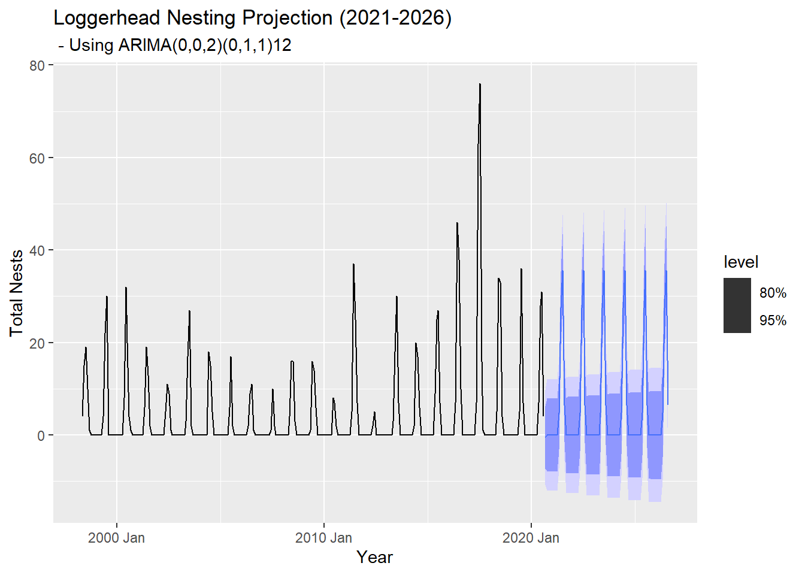
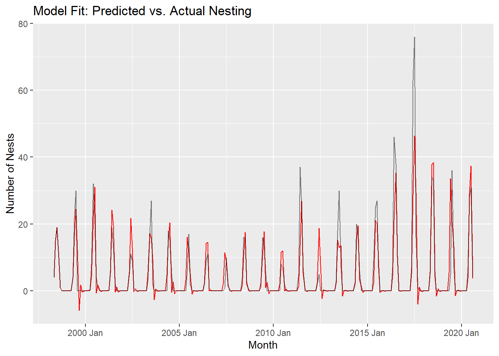
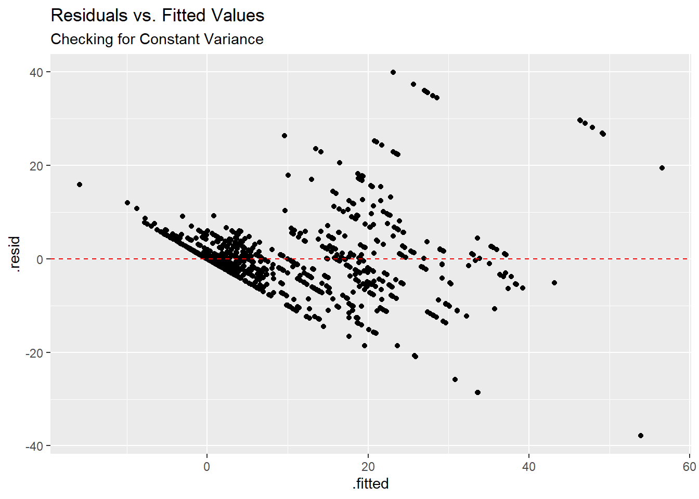
- The model shows its robustness against “shocks” when we compare the partial dataset with the full dataset with an AIC difference of 44.
The Final Forecast (Use 100% data) ARIMA(0,0,2)(0,1,1)[12] was proven to be the best model using your Test Set. Re-fit that exact same model using 100% of the data (all 22 years) to generate predictions for 2026.
6 Notes
Hyndman, Rob J., and George Athanasopoulos. 2026. Forecasting: Principles and Practice. https://otexts.com/fpp3/https://otexts.com/fpp3/.
MathWorks. 2026. “Time Series Analysis.” 2026. https://www.mathworks.com/discovery/time-series-analysis.html.
Mazaris, Matsinos, Kornaraki. 2004. “Modeling the Effect of Sea Surface Temperature on Sea Turtle Nesting Activities by Investigating Seasonal Trends.” Natural Recourse Modeling.